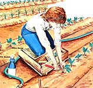

Caring for your backyard growing plot can be as easy as one, two, three if you have . . .
Empty plastic containers have long served double duty in the garden . . . but here's an idea you might not have tried: Cut the bottom out of a round, empty, one-quart plastic bottle (for instance, the kind of jug that fabric softener is often marketed in), and place the vessel over a row-marking stake. With a nail driven through its metal cap to act as a pivot, the round receptacle will be able to turn freely on the wooden marker as it guards your plants from the garden hose.
To cobble up this multipurpose tool, sharpen one end of each of two 10"-12" sections from the wooden handle of a discarded tool, and drill a hole 6" from the nonpointed end of each truncheon. Use one of these "dibbles" to form seed furrows and to drill holes for onion sets or bulbs . . . or connect a pair of dibbles with a cord to make a row marker.
This device could make the difference between staying with that gardening chore until it's finished . . . and limping back to the kitchen and letting the weeds win. Constructed of exterior-grade plywood, the knee saver features a 6"-wide, 6"-deep tool compartment that's ideal for holding small potted plants, seed packets, hand tools, and gloves . . . and a 4"-thick foam-rubber cushion that's protected from wear by a plastic garbage bag. The 20" X 20" platform is mounted on 1"-wide wooden runners to keep moist soil from caking on the bottom . . . and a rope handle makes the kneeler easy to store. If it's put together with brass screws and finished with a coat of exterior enamel, this handy garden helper should last for years.
EDITOR'S NOTE: For more about gardening aids and for a discussion of specific techniques for the elderly or handicapped, turn to page 70. Also see MOTHER's profile on Sam Dardick, page 30.
|
 |
|
|